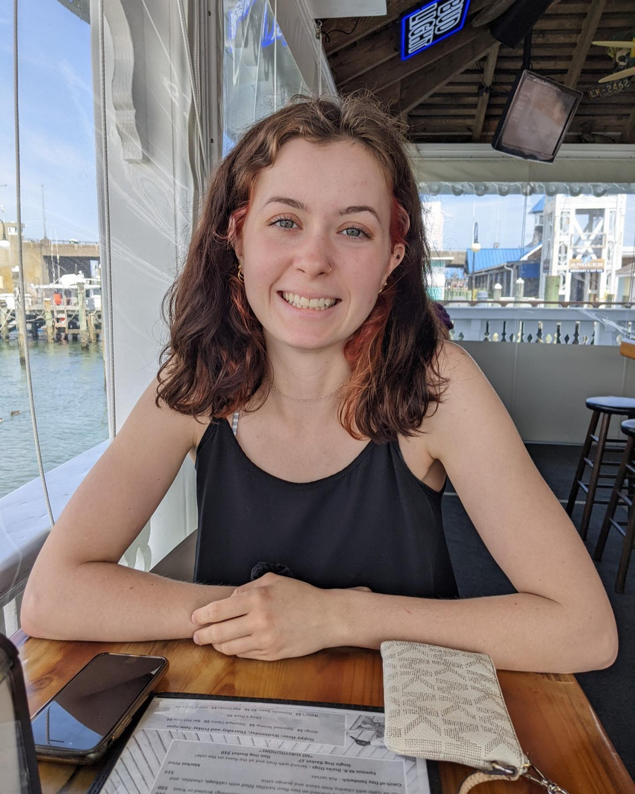

Emily Montanye

Summary
As a recent college graduate with a passion for creativity and design, I bring
a fresh perspective to the field of graphic design and UX/web design. Armed
with a solid foundation in design principles and the latest industry tools, I am
eager to apply my skills and contribute to creating visually captivating and
user-friendly digital experiences. With a keen eye for detail, a collaborative
mindset, and a strong work ethic, I am ready to embark on my professional
journey as a skilled graphic designer and web designer.
Education
- Salisbury University - Bachelor of Fine Arts (2019-2023)
- Major- Graphic Design
- Minor- User Experience Design
- Franklin High School - High School Diploma (2015-2019)
Experience
Skills
- Ability to create visually compelling branding materials, including logos, brand guidelines, and marketing collateral
- Experience with UI design, including creating wireframes, prototypes, and mockups
- Knowledge of UX design including user research, information architecture, and usability testing
- Collaboration with cross-functional teams to bring design projects from concept to completion
Software
- Adobe Illustator
- Adobe Photoshop
- Adobe Indesign
- Adobe XD
- Adobe Express
- Canva
- Microsoft Suite
- Microsoft Visual Studio Code
- HTML/CSS/JavaScript
Other
About Me
Contact Me